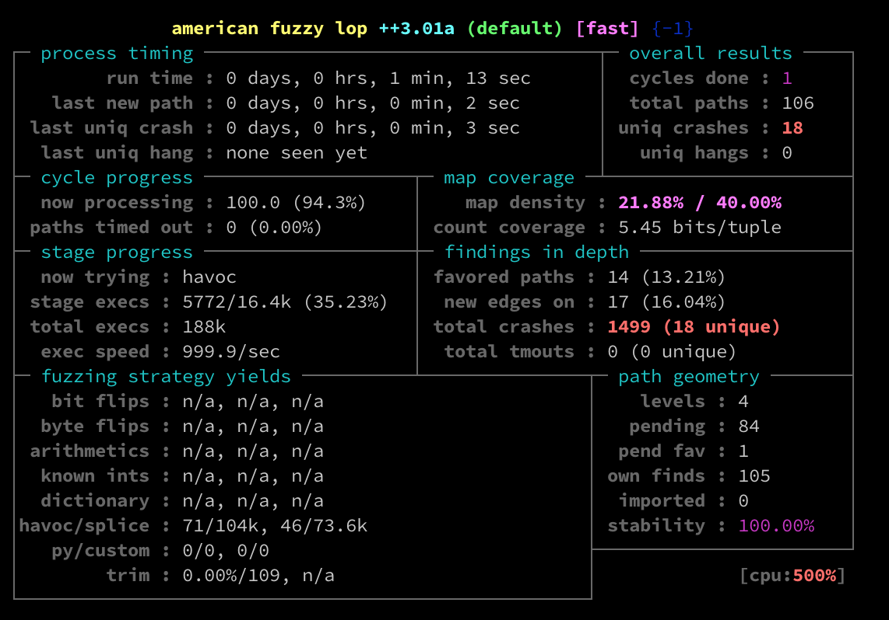

Introduction
Recently, I have started fuzzing with AFL (American Fuzzy Lop) to try to find some vulnerabilities. For the target, I have chosen shell from prakhar1989 on the prakhar1989/shell repo.
AFL is very versatile fuzzer which basically works like this: * Instrument binary * Prepare input * Start fuzzing and wait
Let’s go through all of these three steps in this post and in another post I will write how to analyze crashes.
prakhar1989/shell
This is basically small shell, written probably for learning purposes with limited functionality. Clone it from github repo, run make on it and start exploring w4118_sh binary a bit.
# git clone https://github.com/prakhar1989/shell.git
# cd shell
# make
# ./w4118_sh
$ /bin/ls
Makefile demo_run.txt shell.h README.md shell.c w4118_sh
Instrumenting the binary
Let’s now instrument our binary to use AFL C compiler, called afl-clang-fast. Inside Makefile we need to substitute gcc with ${CC} so we can pass our own CC variable to make process.
It should look like this:
$ cat Makefile
EXECUTABLE=w4118_sh
all: shell
shell: shell.c
${CC} -g -o $(EXECUTABLE) shell.c -Wall -W
...
Now for the compilation part we simply need to pass our own CC variable and instrumentaion is done. Two more steps to go.
We also need to pass AFL_HARDEN=1 variable which per AFL documentation means:
Setting AFL_HARDEN automatically adds code hardening options when invoking the downstream compiler. This currently includes -D_FORTIFY_SOURCE=2 and -fstack-protector-all. The setting is useful for catching non-crashing memory bugs at the expense of a very slight (sub-5%) performance loss.
$ CC=afl-clang-fast AFL_HARDEN=1 make`
afl-clang-fast -g -o w4118_sh shell.c -Wall -W
afl-cc ++3.01a by Michal Zalewski, Laszlo Szekeres, Marc Heuse - mode: LLVM-PCGUARD
shell.c:398:4: warning: ignoring return value of function declared with 'warn_unused_result' attribute [-Wunused-result]
pipe(pipes[i-1]);
^~~~ ~~~~~~~~~~
SanitizerCoveragePCGUARD++3.01a
[+] Instrumented 148 locations with no collisions (hardened mode).
1 warning generated.
Prepare input
AFL expects us to provide input directory which will contain our input string, or binary depending on our case. This does not apply in all fuzzing cases, but for this one, this will work. Sample input should be something simple that would generally work inside our target like /bin/ls which we saw that works inside our shell binary.
On the business now.
$ mkdir in
$ echo '/bin/ls' > in/a
Fuzzing
When we are done with previous two steps, it is now time to fuzz and the process is incredibly simple.
$ afl-fuzz -i in/ -o out ./w4118_sh
[+] afl++ is open source, get it at https://github.com/AFLplusplus/AFLplusplus
[+] NOTE: This is v3.x which changes defaults and behaviours - see README.md
[+] No -M/-S set, autoconfiguring for "-S default"
[*] Getting to work...
[+] Using exponential power schedule (FAST)
[+] Enabled testcache with 50 MB
[*] Checking core_pattern...
[+] You have 1 CPU core and 4 runnable tasks (utilization: 400%).
[*] Setting up output directories...
[+] Output directory exists but deemed OK to reuse.
[*] Deleting old session data...
[+] Output dir cleanup successful.
[*] Scanning 'in/'...
[+] Loaded a total of 1 seeds.
[*] No auto-generated dictionary tokens to reuse.
[*] Creating hard links for all input files...
[*] Validating target binary...
[*] Attempting dry run with 'id:000000,time:0,orig:a'...
[*] Spinning up the fork server...
[+] All right - fork server is up.
[*] Target map size: 160
len = 8, map size = 26, exec speed = 1030 us
[+] All test cases processed.
[+] Here are some useful stats:
Test case count : 1 favored, 0 variable, 0 ignored, 1 total
Bitmap range : 26 to 26 bits (average: 26.00 bits)
Exec timing : 1030 to 1030 us (average: 1030 us)
[*] No -t option specified, so I'll use exec timeout of 20 ms.
[+] All set and ready to roll!
Then you should screen like this:

Generally, you should wait minmum of one cycle to end your fuzzing.
Confirming crash
After running for one minute, we already saw that we have created 18 unique crashes. Let’s take on of those crash strings and run it on our binary to see that we really crashed it.
Crashes are inside your out/ directory which you passed to afl-fuzz using -o flag.
$ ls out/default/crashes
id:000000,sig:11,src:000000,time:701,op:havoc,rep:2
id:000001,sig:11,src:000000,time:2358,op:havoc,rep:8
id:000002,sig:11,src:000000,time:4377,op:havoc,rep:16
id:000003,sig:11,src:000000,time:4651,op:havoc,rep:16
id:000004,sig:11,src:000038,time:10422,op:havoc,rep:16
id:000005,sig:11,src:000038,time:10927,op:havoc,rep:4
id:000006,sig:11,src:000038,time:11853,op:havoc,rep:2
id:000007,sig:11,src:000038,time:13150,op:havoc,rep:16
id:000008,sig:11,src:000038,time:14634,op:havoc,rep:16
id:000009,sig:11,src:000010+000068,time:16819,op:splice,rep:2
id:000010,sig:11,src:000043+000037,time:16936,op:splice,rep:16
id:000011,sig:11,src:000043+000065,time:17750,op:splice,rep:8
id:000012,sig:11,src:000043+000067,time:18260,op:splice,rep:8
id:000013,sig:11,src:000043+000067,time:18284,op:splice,rep:8
id:000014,sig:11,src:000047+000074,time:19681,op:splice,rep:4
id:000015,sig:11,src:000041+000077,time:31486,op:splice,rep:4
id:000016,sig:11,src:000050+000068,time:54679,op:splice,rep:2
id:000017,sig:11,src:000100,time:69503,op:havoc,rep:16
$ ./w4118_sh < out/default/crashes/'id:000008,sig:11,src:000038,time:14634,op:havoc,rep:16'
error: No such file or directory
error: No such file or directory
error: No such file or directory
error: No such file or directory
error: No such file or directory
error: No such file or directory
error: No such file or directory
error: No such file or directory
error: No such file or directory
error: No such file or directory
error: No such file or directory
Segmentation fault (core dumped)
There you have it, we have really crashed our binary and in the second post I will analyze what exactly this vulnerability is and if it is really exploitable.